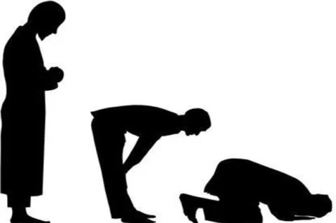

TATA CARA SHOLAT SESUAI SUNNAH

Fikih Manhajus Salikin
Karya Syaikh ‘Abdurrahman bin Nashir As-Sa’di
Kitab Shalat
Syaikh ‘Abdurrahman bin Nashir As-Sa’di rahimahullah berkata dalam kitabnya Manhajus Salikin,
وَالأَرْكَانُ القَوْلِيَّةُ مِنَ المَذْكُوْرَاتِ:
تَكْبِيْرَةُ الإِحْرَامِ وَقِرَاءَةُ الفَاتِحَةِ عَلَى غَيْرِ مَأْمُوْمٍ وَالتَّشَهُّدُ الأَخِيْرِ وَالسَّلاَمُ
“Dan rukun berupa ucapan dari cara shalat yang telah disebutkan adalah: takbiratul ihram, membaca Al-Fatihah bagi selain makmum, tasyahud akhir, dan salam.”
Syaikh ‘Abdurrahman bin Nashir As-Sa’di rahimahullah melanjutkan,
وَالأَرْكَانُ القَوْلِيَّةُ مِنَ المَذْكُوْرَاتِ:
تَكْبِيْرَةُ الإِحْرَامِ وَقِرَاءَةُ الفَاتِحَةِ عَلَى غَيْرِ مَأْمُوْمٍ وَالتَّشَهُّدُ الأَخِيْرِ وَالسَّلاَمُ
وَبَاقِي أَفْعَالِهَا: أَرْكَانٌ فَعِلْيَةٌ, إِلَّا:
اَلتَّشَهُّدَ اَلْأَوَّلَ , فَإِنَّهُ مِنْ وَاجِبَاتِ اَلصَّلَاةِ
وَالتَّكْبِيرَاتِ غَيْرَ تَكْبِيرَةِ اَلْإِحْرَامِ.
و “سُبْحَانَ رَبِّي اَلْأَعْلَى” مَرَّةً فِي اَلسُّجُودِ.
و “رَبِّ اِغْفِرْ لِي” بَيْنَ اَلسَّجْدَتَيْنِ مَرَّةً, مَرَّةً, وَمَا زَادَ فَهُوَ مَسْنُونٌ.
وَقَوْلَ: “سَمِعَ اَللَّهُ لِمَنْ حَمِدَهُ” لِلْإِمَامِ وَالْمُنْفَرِدِ.
و “رَبَّنَا لَكَ اَلْحَمْدُ” لِلْكُلِّ.
فَهَذِهِ اَلْوَاجِبَاتُ تَسْقُطُ بِالسَّهْوِ, وَيَجْبُرُهَا سُجُودُهُ اَلسَّهْوَ, وَكَذَا بِالْجَهْلِ
وَالْأَرْكَانُ لَا تَسْقُطُ سَهْوًا وَلَا جَهْلاً وَلَا عَمْدًا
“Dan rukun berupa ucapan dari cara shalat yang telah disebutkan adalah: takbiratul ihram, membaca Al-Fatihah bagi selain makmum, tasyahud akhir, dan salam. Dan sisa gerakan itu masuk dalam rukun shalat yang berupa perbuatan kecuali:
- Tasyahud awwal, ini termasuk wajib shalat.
- Takbir-takbir dalam shalat kecuali takbiratul ihram.
- Ucapan “SUBHAANA ROBBIYAL A’LAA” sekali ketika sujud.
- Bacaan “ROBBIGH-FIR LII” di antara dua sujud satu kali satu kali; jika ditambah lebih dari itu, maka masuk dalam sunnah shalat.
- Ucapan “SAMI’ALLAHU LIMAN HAMIDAH” bagi imam dan munfarid (orang yang shalat sendirian).
- Ucapan “ROBBANAA LAKAL HAMDU” untuk imam, munfarid, dan makmum.
Enam hal di atas masuk dalam wajib shalat. Wajib shalat bisa gugur karena lupa dan ditutup kelupaan tersebut dengan sujud sahwi, begitu pula gugur jika tidak tahu. Sedangkan rukun shalat tidaklah bisa gugur walau seseorang lupa, tidak tahu, atau sengaja.”
Salam dan Takbiratul Ihram Termasuk Rukun Shalat
Dari Abu Sa’id Al-Khudri radhiyallahu ‘anhu, Rasulullah shallallahu ‘alaihi wa sallam bersabda,
مِفْتَاحُ الصَّلاَةِ الطُّهُورُ وَتَحْرِيمُهَا التَّكْبِيرُ وَتَحْلِيلُهَا التَّسْلِيمُ
“Pembuka shalat adalah bersuci, yang mengharamkan dari perkara di luar shalat adalah ucapan takbir dan yang menghalalkan kembali adalah ucapan salam.”
(HR. Tirmidzi, no. 238 dan Ibnu Majah, no. 276. Abu ‘Isa mengatakan bahwa hadits ini hasan. Syaikh Al-Albani mengatakan bahwa hadits ini sahih).
Baca Juga: Manhajus Salikin: Sifat Shalat Nabi, Takbiratul Ihram dan Mengangkat Tangan
Tasyahud Akhir Yang Setelah Itu Salam Termasuk Rukun Shalat
Dari ‘Abdullah bin Mas’ud radhiyallahu ‘anhu, ia berkata,
كُنَّا إِذَا صَلَّيْنَا مَعَ النَّبِيِّ صَلَّى اللهُ عَلَيْهِ وَسَلَّمَ قُلْنَا: السَّلَامُ علَى اللَّهِ قَبْلَ عِبَادِهِ، السَّلَامُ علَى جِبْرِيلَ، السَّلَامُ علَى مِيكَائِيلَ، السَّلَامُ علَى فُلَانٍ وفُلَانٍ، فَلَمَّا انْصَرَفَ النبيُّ صَلَّى اللهُ عليه وسلَّمَ، أقْبَلَ عَلَيْنَا بوَجْهِهِ، فَقالَ : إنَّ اللَّهَ هو السَّلَامُ، فَإِذَا جَلَسَ أحَدُكُمْ في الصَّلَاةِ فَلْيَقُلْ: التَّحِيَّاتُ لِلَّهِ، والصَّلَوَاتُ، والطَّيِّبَاتُ، السَّلَامُ عَلَيْكَ أيُّها النبيُّ ورَحْمَةُ اللَّهِ وبَرَكَاتُهُ، السَّلَامُ عَلَيْنَا وعلَى عِبَادِ اللَّهِ الصَّالِحِينَ، فإنَّه إذَا قالَ ذلكَ أصَابَ كُلَّ عَبْدٍ صَالِحٍ في السَّمَاءِ والأرْضِ، أشْهَدُ أنْ لا إلَهَ إلَّا اللَّهُ، وأَشْهَدُ أنَّ مُحَمَّدًا عَبْدُهُ ورَسولُهُ، ثُمَّ يَتَخَيَّرْ بَعْدُ مِنَ الكَلَامِ ما شَاءَ
“Jika shalat bersama Nabi shallallahu ‘alaihi wa sallam, kami mengucapkan salam kepada Allah sebelum salam kepada para hamba-Nya, lalu salam kepada Jibril, salam kepada Mikail, salam kepada fulan dan fulan. Ketika Nabi shallallahu ‘alaihi wa sallam selesai beliau lantas menghadap kami dengan wajahnya, lantas beliau berkata, ‘Sesungguhnya Allah itu As-Salaam (Yang Memberi Keselematan). Jika salah seorang di antara kalian duduk, maka ucapkanlah:
AT-TAHIYAATU LILLAH, WASH-SHOLAWAAT, WATH-THOYYIBAAT, ASSALAAMU ‘ALAIKA AYYUHAN NABIYYU WA ROHMATULLAHI WA BAROKAATUH, ASSALAAMU ‘ALAINAA WA ‘ALA ‘IBAADILLAHISH SHOLIHIIN.
Jika engkau membaca seperti itu, maka setiap hamba Allah yang saleh di langit dan di bumi akan mendapatkan doa kebaikan tersebut. Lalu mengucapkan:
ASY-HADU ALLA ILAAHA ILLALLAH, WA ASYHADU ANNA MUHAMMADAN ‘ABDUHU WA ROSUULUH.
Lalu silakan pilih kalimat setelah itu yang mau diucapkan.”
(HR. Bukhari, no. 6230). Kalimat perintah membaca tasyahud di sini menunjukkan akan wajibnya. Sedangkan tasyahud awal tidaklah masuk dalam rukun shalat.
Baca Juga: Manhajus Salikin: Menutup Shalat dengan Salam
Hukum Membaca Al-Fatihah untuk Makmum
Membaca Al-Fatihah di sini berlaku bagi imam dan orang yang shalat sendirian. Sedangkan makmum dalam shalat jahriyah (Maghrib, Isya dan Shubuh) tidak membaca Al-Fatihah, ia cukup mendengarkan, inilah pendapat yang lebih kuat. Karena Allah Ta’ala memerintahkan,
وَإِذَا قُرِئَ الْقُرْآَنُ فَاسْتَمِعُوا لَهُ وَأَنْصِتُوا لَعَلَّكُمْ تُرْحَمُونَ
“Dan apabila dibacakan Al-Quran, maka dengarkanlah baik-baik, dan perhatikanlah dengan tenang agar kamu mendapat rahmat.”
(QS. Al-A’raf: 204).
Abu Hurairah radhiyallahu ‘anhu berkata,
صَلَّى النَّبِىُّ -صلى الله عليه وسلم- بِأَصْحَابِهِ صَلاَةً نَظُنُّ أَنَّهَا الصُّبْحُ فَقَالَ هَلْ قَرَأَ مِنْكُمْ مِنْ أَحَدٍ. قَالَ رَجُلٌ أَنَا. قَالَ إِنِّى أَقُولُ مَا لِى أُنَازَعُ الْقُرْآنَ.
“Nabi shallallahu ‘alaihi wa sallam shalat bersama para sahabatnya yang kami mengira bahwa itu adalah shalat Shubuh. Beliau bersabda, ‘Apakah salah seorang dari kalian ada yang membaca surah (di belakangku)?’ Seorang laki-laki menjawab, ‘Saya.’ Beliau lalu bersabda, ‘Kenapa aku ditandingi dalam membaca Al-Quran?’”
(HR. Abu Daud, no. 826 dan Tirmidzi, no. 312. Al-Hafizh Abu Thahir mengatakan bahwa hadits ini shahih).
Ibnu Mas’ud radhiyallahu ‘anhu berkata,
أَنْصِتْ لِلْقُرْآنِ فَإِنْ فِي الصَّلاةِ شُغْلا، وَسَيَكْفِيكَ ذَلِكَ الإِمَامُ
“Diamlah saat imam membaca Al-Quran karena dalam shalat itu begitu sibuk. Cukup bagimu apa yang dibaca oleh imam.”
(HR. Ath-Thabrani, 9:264)
Ibnu ‘Umar radhiyallahu ‘anhuma berkata,
يَنْصِتُ لِلْإِمَامِ فِيْمَا يَجْهَرُ بِهِ فِي الصَّلاَةِ وَلاَ يَقْرَأُ مَعَهُ
“Hendaklah diam ketika imam mengeraskan bacaannya dalam shalat. Dan janganlah baca bersamanya.”
(HR. Abdur Razaq, 2:139).
Baca Juga: Hukum Al-Fatihah (4): Membaca Al-Fatihah di Belakang Imam
Rukun Shalat Berupa Perbuatan (Gerakan)
- Berdiri bagi yang mampu untuk shalat wajib. Sedangkan untuk shalat sunnah, untuk berdirinya dihukumi sunnah. ‘Ali Al-Qari mengatakan, “Boleh shalat sunnah dilakukan dalam keadaan duduk padahal mampu berdiri. Ini dibolehkan dengan ijmak (kata sepakat ulama). Namun orang yang mampu berdiri dan tidak ada uzur lantas memilih shalat sunnah dalam keadaan duduk, maka pahalanya separuh dari yang berdiri.” (Jam’u Ar-Rasail fi Syarh Asy-Syamail, 2:99. Dinukil dari Ghayah Al-Muqtashidin Syarh Manhaj As-Salikin, 1:254)
- Rukuk, karena berdasarkan hadits musii’ fii shalatihi dan dikatakan wajib berdasarkan ijmak. Sedangkan rukuk kedua untuk shalat gerhana (dalam satu rakaat) dihukumi sunnah (tidak wajib).
- Berdiri untuk iktidal, wajibnya juga berdasarkan hadits musii’ fii shalatihi.
- Sujud, wajibnya juga berdasarkan hadits musii’ fii shalatihi dan ada ijmak tentang hal ini.
- Duduk antara dua sujud, juga berdasarkan hadits musii’ fii shalatihi.
- Duduk tasyahud akhir karena duduk di sini adalah tempat untuk rukun tasyahudnya.
- Tertib (berurutan), karena Nabi shallallahu ‘alaihi wa sallam melakukan rukun-rukun ini secara berurutan, juga ditegaskan dalam hadits musii’ fii shalatihi dengan kata “tsumma (arti: kemudian)”, lalu ada ijmak dalam hal ini.
- Thumakninah ketika rukuk, bangkit dari rukuk, sujud, duduk antara dua sujud karena Nabi shallallahu ‘alaihi wa sallam memerintahkan pada orang yang jelek shalatnya demikian. Standar minimal thumakninah yaitu keadaan tenang dan membedakan antara berpindah dan rukun.
Kesimpulan rukun shalat berupa ucapan dan perbuatan berarti ada dua belas.